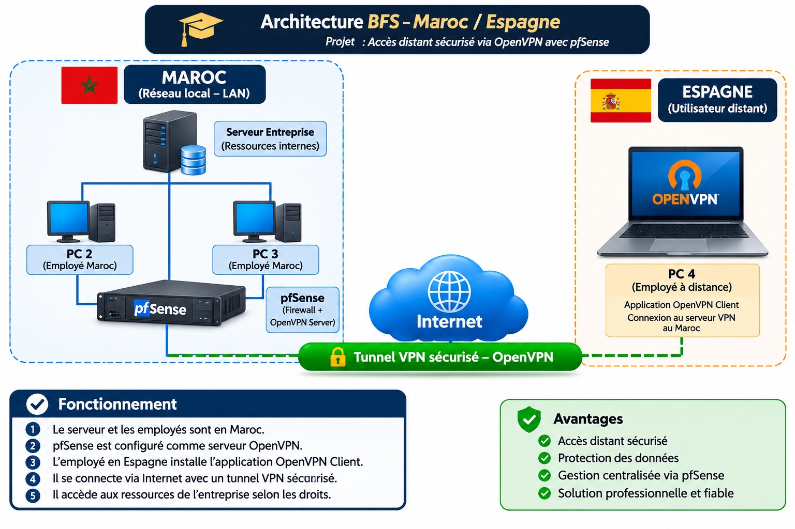

Context
A remote user needs access to specific internal resources required for daily work. The connection must remain encrypted, authenticated and limited to authorized services.
Implementation of a solution allowing an authorized remote user to securely access selected internal resources through an encrypted VPN tunnel, without directly exposing private services to the Internet.
Provide secure remote access to the private infrastructure without directly exposing internal resources on the Internet.
A remote user needs access to specific internal resources required for daily work. The connection must remain encrypted, authenticated and limited to authorized services.
pfSense acts as the firewall, VPN gateway and OpenVPN server, while the remote workstation uses OpenVPN Client.

Logical path: remote workstation → Internet → pfSense / OpenVPN → authorized internal resources.
The connection follows a protected path from the remote workstation to the authorized internal resources.
Application servers and local workstations remain protected inside the private network.
pfSense protects the infrastructure and hosts the OpenVPN service.
The authorized workstation uses a dedicated OpenVPN client profile.
The client initiates a connection to the published VPN service.
After authentication, OpenVPN establishes an encrypted tunnel.
pfSense firewall rules limit the VPN user to the required resources.
The main technical tasks completed during the implementation of the solution.
Prepared the flows between the remote client, pfSense and the internal network.
Configured pfSense as the firewall and VPN gateway.
Configured the OpenVPN server and encryption settings.
Prepared and deployed the OpenVPN connection profile.
Defined rules between the VPN network and internal resources.
Verified the tunnel, connectivity and access to authorized resources.
The solution enables an authorized remote user to establish an encrypted connection to the infrastructure. OpenVPN protects communications, while pfSense controls traffic between the VPN network and permitted internal resources.